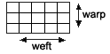

| applique |
a method of decoration in which fabric is cut and attached to the surface of another material to make pictures or patterns. |
| appropriation |
taking or copying images or ideas, generally to make new works or to present the images or ideas as one's own and usually without permission from the original work's creator. |
| art work |
a product of art-making activity (e.g., a painting, sculpture, photograph, drawing). |
| assemblage |
a three-dimensional art object made up of found materials or objects. |
| aerial/atmospheric perspective |
the observable effect of atmosphere. Lines and details blur and colours pale and are more blue with distance. |
| bas-relief |
a composition in shallow relief on a flat or curved surface (e.g., on a coin). |
| body of work |
a collection of developed and assembled works (usually by one artist) that represents an investigation or study. |
| cartoon |
a single caricature or comic drawing. Prior to the 19th century it referred to a full-size preliminary drawing for a painting or tapestry. |
| collage |
this technique involves the assembling and gluing down on a flat surface of assorted materials, selected for their pictorial meaning, or textural qualities. |
| collagraph print |
a relief printing process. A block, which has been created by gluing differently – textured materials to the surface, is sealed and then printed in the usual way. Alternatively the separate textural components can be inked in different colours and re-assembled for printing. |
| communication |
conveying or transmitting meaning within a particular context. |
| composition |
an art work; or the arrangement of elements (e.g., shapes, lines, colours) in an art work. |
| conventions |
established procedures, in making art works, that use particular techniques or processes to represent, organise, or interpret ideas. |
| cropping |
cutting off or masking out an unwanted area of an image. |
| culture |
understandings, patterns of behaviour, practices, values, and symbol systems that are acquired, preserved, and transmitted by a group of people and that can be embodied in art works. |
| design brief |
a given or negotiated task that clearly identifies a design problem for investigation and resolution, often in accordance with required specifications. |
| drawing |
a sketch, plan, photograph, computer-generated image, diagram, or model created in order to develop an idea or as an end in itself. |
| drypoint |
an intaglio printing process. Marks are scratched directly into a surface, such as metal or mylar film, which is then covered with ink. The surface is cleaned and the ink which remains in the grooves makes a printed image on dampened paper when pressure is applied. |
| electronic media |
media (e.g., computers, digital cameras) in which images are created and manipulated electronically. |
| elements of the visual arts |
the basic qualities of two-dimensional, three-dimensional, and time-based compositions (e.g., line, point, tone, texture, colour, form or mass, shape, space). |
| form |
a particular field or genre within the visual arts (e.g., painting, printmaking); or the compositional structure of an art work, determined by the organisation of and relationships between the visual arts elements within the work; or the physical shape and dimension of an object within an art work. |
| found materials |
objects found in the environment and used as tools or media in making art works. |
| framing devices |
the use of formal or informal borders, such as patterns or aligned objects (e.g., trees, abstract shapes or areas of colour) which surround and thus frame more central components of an image. |
| frottage |
a sheet of paper is placed over a rough surface and rubbed with pencil or crayon to reord the image of texture of the surface. |
| genre |
a type of art work that has a tradition or history and is identifiable by specific characteristics (e.g., portrait, landscape, still life, abstract painting). |
| geometric abstraction |
an approach in non-representational art in which observed forms are converted into geometric shapes. |
| hatching |
creating tonal or shading effects with closely spaced parallel lines. When such lines are placed at an angle across the first, it is called cross-hatching. Artists use this technique, varying the size, closeness and other qualities of the lines, most commonly in drawing, linear painting and engraving. |
| icon |
a symbol, image, motif, emblem, or object that is generally recognised as representative of a person, place, era, or culture. |
| idea |
a visual, auditory, or kinaesthetic concept, or a combination of these, within an arts discipline. |
| impasto |
texture due to the thick application of paint. |
| installation |
a two-dimensional, three-dimensional, or time-based art work (or a combination of these) made specifically for a chosen site or environment and often involving interaction between itself, its audience, and the site. |
| interpretation |
analysis or appreciation of meaning in an art work by a viewer. |
| koru |
a design based on the fern frond (pitau). |
| kowhaiwhai |
painted rafter patterns associated with the Māori meeting house. |
| layering |
applying one layer of opaque or transparent material (e.g., tissue papers, paint, glazes) on top of another. |
| layout |
the arrangement and positioning in a design of text, illustrations, photographs, diagrams, and so on. |
| linear perspective |
converging real or imagined lines draw the eye to a vanishing point (horizon). Objects located on these lines diminish proportionately as they near the vanishing point. |
| maquette |
a preliminary model in wax, card, wire, or clay, made in preparation for a larger three-dimensional work. |
| materials |
any physical substances used to make art works, including media (e.g., wax, crayons, oil paint, modelling clay) and found objects (e.g., leaves, shells, wire). |
| meaning |
what an artist expresses in an art work; or what a viewer understands and interprets from an art work. |
| media |
material or materials commonly used to make art works; they include two-dimensional media (e.g., graphite, ink, paint, photographic paper, canvas), three-dimensional media (e.g., fibres, clay, wood, metal, glass, bone, plastics), and time-based media (e.g., film, videotape). |
| mixed-media |
this technique uses a range of different materials to develop an artwork (for example, ink, paint, newspaper, card, cut paper, pencil, or pastel and can incorporate photographs, computer printouts, newspaper articles). Some, or all of these are used in layering, smudging, textural rubbings (frottage), scratching (sgrafitto). |
| monochromatic |
consisting of only a single colour or hue; may include its tints and shades. |
| monoprint |
a unique one-off print. There are three common approaches. An inked plate can be wiped and variously altered then printed. A piece of paper can be placed over the inked plate, and drawn upon, thus picking up ink from the plate to create a print on the underside of the paper. A plate can be directly painted using oil paint or ink and then printed. |
| motif |
a distinct, often repeated idea or feature within a two-dimensional, three-dimensional, or time-based art work. |
| performance art |
an art event (body art, a staged event, or sequence), which happens for an audience. Dates from the 1960's. |
| perspective |
the method of representing a three-dimensional object or a particular volume of space, on a two-dimensional surface) e.g. linoprint, woodblock, cardboard print, collograph. |
| pictorial device |
a technique in which a visual strategy or an aspect of design is used for a particular picture-making purpose (e.g., using linear perspective and tonal devices to give the illusion of space in a drawing). |
| pictorial devices |
elements, principles and associated processes and procedures, which are used in particular ways in relation to subject matter, when arranging an artwork. |
| pitau |
1. a young succulent shoot of a plant, especially a frond of a fern.
2. perforated spiral carving. |
| plein air |
painted out of doors in the "open air". |
| polychromatic |
having many colours; multicoloured. |
| popular culture |
contemporary culture as defined by the objects, images, artefacts, literature, music, and so on of "ordinary" people. |
| poupou |
1. (singular: pou or epa) the upright posts forming the solid wall framework of a whare (Māori meeting house). When carved to represent the human form, they are regarded as places where the ancestral spirit could dwell to comfort and protect the living.
2. (singular and plural) the large carved free-standing posts (often with multi-figures) which support the roof of the whare. |
| principles of the visual arts |
concepts such as balance, harmony, rhythm, tension, and contrast, achieved in an art work by organising and arranging visual arts elements. |
| procedure |
a particular way of carrying out an art-making process; for example, the procedures involved in the process of etching include applying the ink to the etching plate, rubbing off the excess, and taking an impression. |
| process |
a specific art-making method; for example, etching is one of several printmaking processes. |
| relief print |
any method of printmaking where the surface to be inked is raised or in relief e.g., linoprint, woodblock, cardboard print, collagraph. |
| scale |
proportion or measurement. |
| sequence |
a series of images, drawings, or art works that shows the development of an idea or storyline. |
| sgraffito |
a technique that involves scratching through one layer to reveal another. |
| shallow relief construction |
see bas-relief. |
| silk-screen printing |
a method of printmaking in which ink is forced through a fine-mesh screen onto a textile or paper surface; images are transferred using a stencil supported by the screen. |
| sketches |
a preliminary drawing of a composition. |
| social text |
an art work that refers to the society or culture in which it is made and that reflects the dynamics within that society or culture. |
| storyboard |
a sequence of images or drawings that describes the planned content of a film or video. |
| style |
the distinguishing characteristics of a particular period, movement, or school of painting, sculpture, design, and so on; or the distinctive personal mannerisms or traits of a particular artist as evidenced in their work. |
| symbol |
a recognised sign, object, or image that represents something other than itself within a particular cultural context. |
| taniko |
ornamental border of a mat or cloak formed by a close knotting process. Patterns consist of repeated triangular motifs which have symbolic traditional meanings similar to those found in tukutuku panels. |
| tapa |
a cloth that is made in Pacific nations from pounded bark and that has distinctive designs. |
| technique |
a particular way or method of using a tool or materials to achieve a specific effect (e.g., using the point of a pencil to create a fine line; using a pencil sideways to create light and dark tones). |
| technologies |
equipment used to help create, present, explain, document, view, interpret, analyse, or learn about visual arts works, including tools (e.g., chisels, palette knives), materials (e.g., paper, fabric, clay, ink), and film and electronic media (e.g., video, computers). |
| text |
any expressive work (artistic or otherwise) that can be "read", whether it uses words, images, or sounds. |
| time-based art |
art works that are sequenced through time, that change as we view them, and that may be ephemeral (e.g., video, kinetic sculpture, performance works). |
| tivaevae |
appliqued quilts from the Cook Islands. |
| viewpoint |
a compositional device used in depicting space and objects in space (e.g., high and low viewpoints, side-on views, close-ups, distant viewpoints). |
| wahi tuturu |
traditional places of cultural or spiritual significance for Māori. |
| wakahuia |
traditional Māori taonga. Small, ornate, carved wooden containers used by Māori to store precious objects. |
| warp |
strips of paper the same length used as the base for weaving. |
| weft |
paper strips used for weaving through the warp. |
| |
 |
| wet and dry media |
art-making media with wet properties (e.g., paint, ink, dyes, washes) or dry properties (e.g., pencil, charcoal, conte, crayon). |
| whare whakairo |
carved Māori meeting houses. |